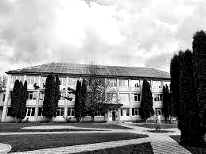
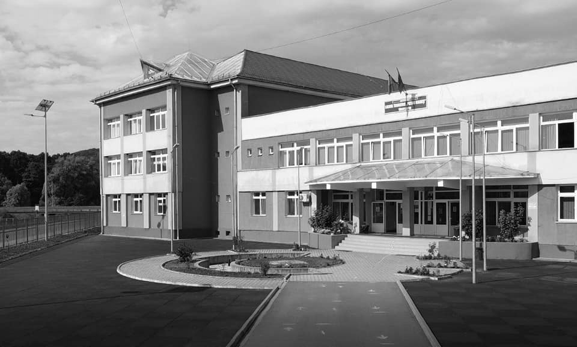
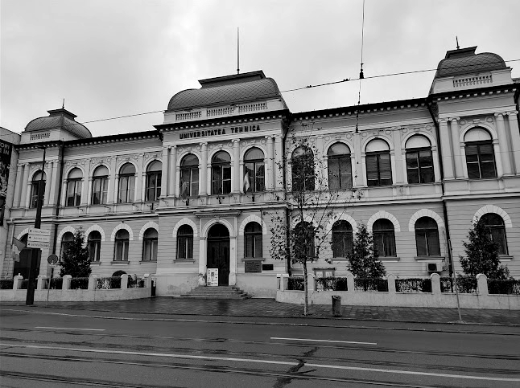

Gymnasium:

-
Gymnasium: Liceul Technologic Grigore C. Moisil Targu Lapus
-
Website: https://tehnotgl.wixsite.com/tehnotglmm
-
Period: 2011-2015
High school:

-
High school: Liceul Teoretic Petru Rares Targu Lapus
-
Website: https://www.ltprmm.ro
-
Period: 2015-2019
Higher education:

-
Higher education: Facultatea de Automatica si Calculatoare Cluj-Napoca
-
Website: https://ac.utcluj.ro
-
Period: 2019-2023